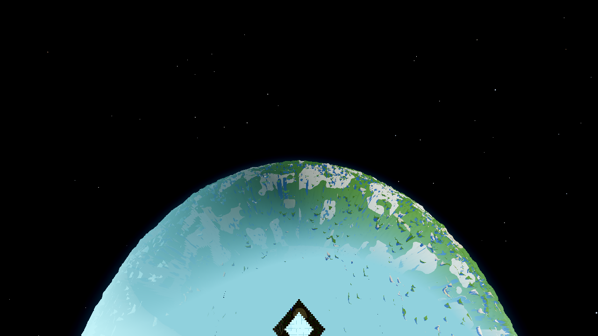
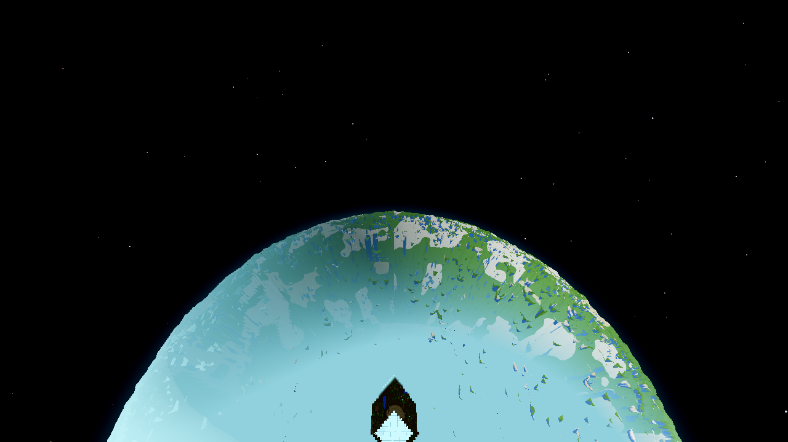
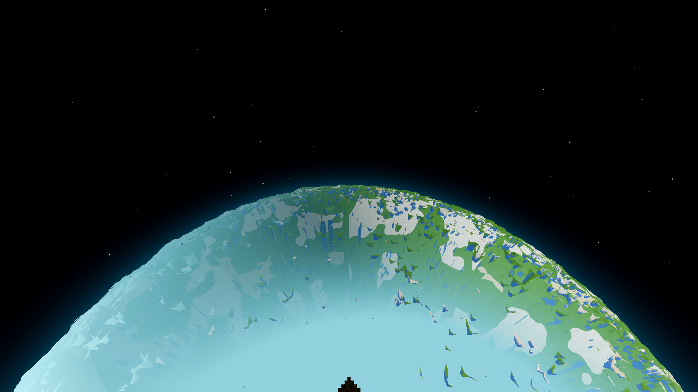
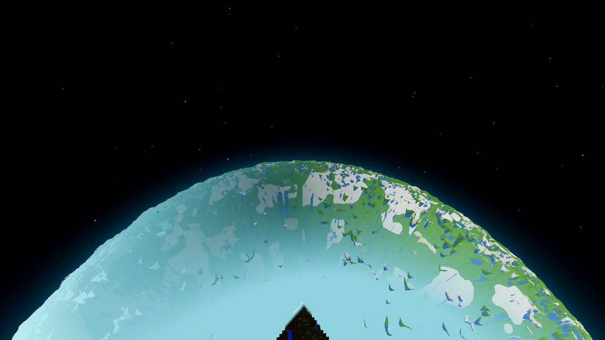
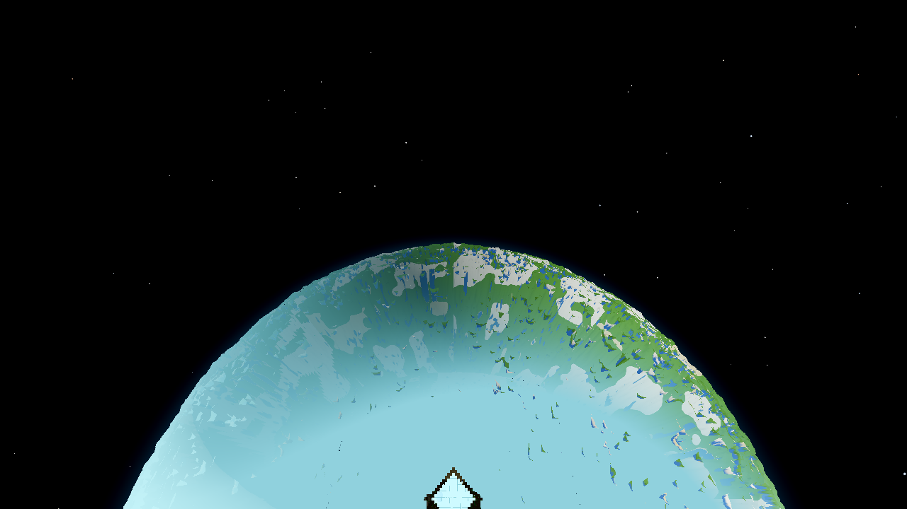
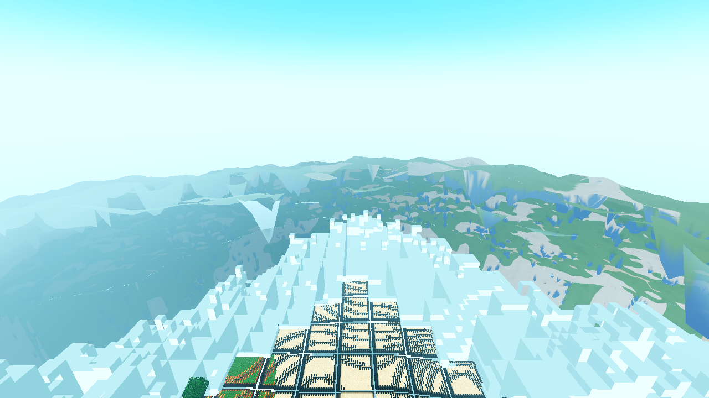
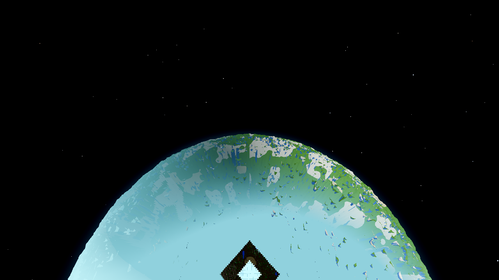
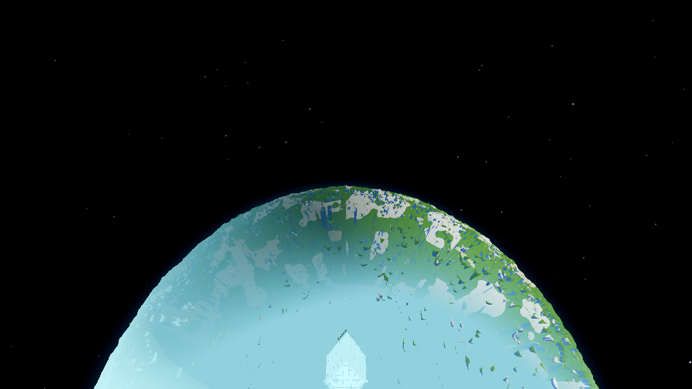
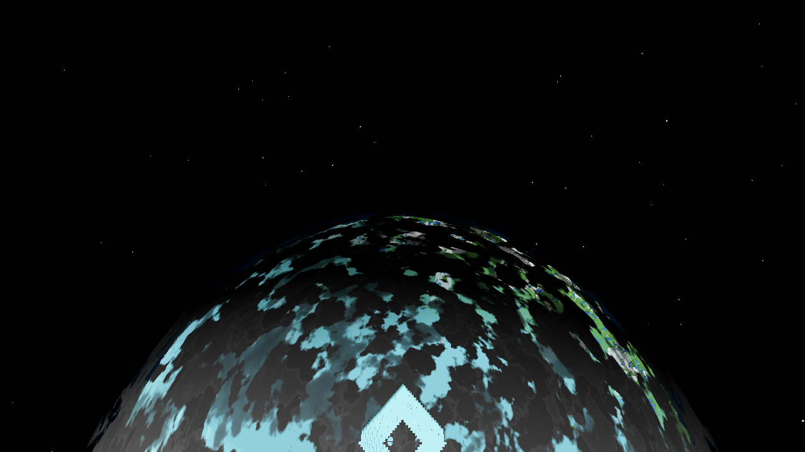

Builder: delegated subagent (opencode). Tree: dirty — 4 files M from a concurrent session (godot/scenes/main.gd, godot/autoload/game.gd, godot/entities/drop.gd, godot/autoload/debug.gd + AC-0067 PNGs). Every measurement in this document ran on that tree; before/after are on the SAME tree, so the A/B is fair. User config: radius 24, fog full at 332 m (FOG_PCT 83), seed 44, Forward+ via lavapipe @ ~5 FPS, 1280×720, TIME 0.30 frozen, clouds off (measurement runs).
It was the ORDER, and the order is now view-following. At the 2600 m satellite view the arc the camera looks at now reaches the render edge in ~180 s (before: not reached even at 360 s). Throughput is unchanged — the total built fraction at 360 s is the same to 0.5 % (0.589 → 0.592): the fix reorders the budget toward the viewed arc, it does not add budget. At 1600 m (band 0.82) the visible arc built at 180 s is 6× (0.74 vs 0.18). At 300 m (band 0) before ≡ after to the byte (identical numbers at 60/180/360 s — the ground order is untouched by construction: the flight band is 0 below 500 m). Plus one line of rendering that was NOT part of the ordering problem: the current tree renders the built far annulus at orbital altitude as a near-black void instead of the fog wall (a shipped backwards mix in the AC-0384 r8 haze bridge) — a built world that looks unbuilt. Fixed (the swap the same file's own comment requires); without it the "world present" acceptance could not be evidenced. Details §4.
Single steady scheduler pass (AC-0335 _drain_build_queue): bake score _grid_score = taxi·10000 + layer, taxi = |dx|+|dz| from the recenter anchor column, layer = slab rank (Y-distance from the player slab). No view dependence (AC-0250 removed the look bias). Pace: LOW_WAVE 3.5 ms + frame cap 8 + drain budget. The fill is a symmetric taxi diamond growing from the player's column — correct on the ground (the player IS the view), wrong in flight: at 2600 m the camera looks 90° off the diamond's growth direction, so the far annulus (the visible arc) sits on the diamond's trailing arc.
_view_sample() computes the view direction in the anchor's tangent plane (aim dir through the recenter-anchor sphere basis, cached per anchor column), lead = view-dir × (flight band × W, W = 0.7 default, env AWECRAFT_VBIAS_W, 0 = pre-AC-0399 order). In _grid_score: tier ≤ 3 columns with dot(column-dir, lead) > 0 get taxi ×= (1 − cos·|lead|/|col|) — a column looking at the camera has near-zero effective taxi; behind-the-player columns keep full taxi. Tier 4 (past-edge, data-only) is NOT biased. The pool key gained two quantized view fields (8 compass sectors × band level) so the AC-0250 debounced rescore still fires only on real view changes. The data (gen) pass shares the score — order-only, no content change.sync_flight_band() + last_flight_band/last_flight_alt cache + flight_band() getter: band = AC-0145 P2 smoothstep(500, 2000, radial altitude) — 0 at ≤500 m (ground: byte-identical order), ~0.05 at 700 m, ~0.82 at 1600 m, 1.0 at ≥2000 m.player.sync_flight_band() after the teleport (the preset freezes the player, so the per-step band update never runs); (b) player.look_at(pl_pos + pl_dir, pl_up) after the camera aim (a fresh player's identity basis aims ~90° off the limb — the stand-in observer must look where the camera looks; in the real game the camera rides the player basis so aim IS view); (c) AWECRAFT_SNAP_STEPS=f1,f2,… multi-snapshot (documented in HARNESS.md §2 at closeout) — additive; unset = byte-identical old behaviour.haz = mix(haz_b, fog_f, w) (was mix(fog_f, haz_b, w)), restoring the fog wall the file's own comment requires. Not a streaming change; required for the "world present" acceptance (§5.4).Measured, current tree (HEAD, shader unmodified): at 2600 m the bright fog patch (the lit high-LOD core) is FROZEN at ~148 m while a near-black region (16,8,0) grows 153 → 234 → 313 m over 60/180/360 s — the true frontier (same growth order as round 4's 256/365 m fog-patch values on the pre-r7 tree: ~0.45–0.55 m/s either way). The built far annulus renders as a dark void, not the fog wall. Chain of cause: (1) far-band surface vertex alpha = 0 (origin cell solid, AC-0283 P3 "no block light") → lit = mix(0.2, 1.0, a) = 0.2 floor — by design, hidden as long as haze covers it; (2) the r8 bridge (commit ecc5285, "one air colour for fog, haze and sky") computes w = 1 − smoothstep(336, 384, taxi) and haz = mix(fog_f, haz_b, w) — with w = 1 across the whole nadir core, mix returns haz_b, not fog_f; (3) haz_b = clamp(haz_a + (1−op)) is the body's LIMB haz — ~0 at the orbital nadir (cosv ≈ 1, op = 1) → haz ≈ 0 → the 0.2 base shows through. The comment two lines above the code says the opposite: "with w=1 out to 336, haz = fog_f … the 2600 m nadir wall keeps the fog wall". The r8-dev run had measured that wall at (177,240,255); the AC-0386-era aero.gd header records the broken state (24,25,23). Round 4's 256/365 numbers predate r8 (measurement run 2026-10-05, post-r7 — the engine-fog tree), which is why the fog-patch instrument broke on the current tree. The grain-box gate passed with the dark rendering (a flat dark region has no slab texture — true for the wrong reason). Fix applied: the mix-argument swap (one line + comment note). Residual, flagged as an r8 follow-up: at orbital altitude the 336–384 m seam fade targets haz_b ≈ 0, so the outer 48 m of the annulus fades fog→dark base against the sky — a thin dark rim the r8 design (which assumed the dome abuts the seam) does not anticipate at altitude; the fade there should target the background colour. See §7.
Method: camera pose reconstructed exactly from the planet preset (spawn (8.5, 141, 8.5), R = 4000, tangent-limb view, fov 75); extent = (d−R)·tan θ = flat-chart distance from the anchor (= the streaming taxi metric). Built detector: set 1 (pre-fix tree): dark (far-band base < 60) ∪ bright (fog core > 240) masks — the built far band's only signature on that tree; set 2 (post-fix tree): round-4 fog patch (annulus pixels within tol 28 of the fog colour — the mask is restricted to the annulus ext ≤ 384 m because the AC-0386 space-adjusted sky is inside round-4's tol-28 window of the fog colour outside the annulus (limb band (178,231,238) at 2600/1600 m; the low-altitude sky (210,250,255)/(192,251,255) at 700/300 m) — verified: inside the annulus the separation is clean — built fog (205,250,255) vs unbuilt sky (144,209,221) at 2600 m (Δmax 61; the dome does not render inside the in-frame annulus at that altitude — 99.4 % of the non-fog annulus px sit within 15 of the sky colour) and vs the unbuilt hazy dome (94,160,170)+ at low altitude (Δmax > 100) — both far outside tol 28). Cross-check: set-2's fog-patch frontier vs set-1's dark-mask frontier agree within ~3–20 m on the same runs (the 336–384 m seam haze-fade trims the fog patch's outer edge slightly more than the colour masks) — two independent detectors, one geometry, the same order signal: the fwd cut is 322 m at 180 s in both instruments.
| set | t | frontier p90 (m) | fwd cut p90 (m) | side L/R cut p90 (m) | full annulus built |
|---|---|---|---|---|---|
| BEFORE (W = 0) | 60 s | 127.3 | 140 | 139 / 139 | 0.148 |
| 180 s | 209.4 | 226 | 226 / 228 | 0.342 | |
| 360 s | 289.0 | 310 | 307 / 314 | 0.591 | |
| AFTER (W = 0.7) | 60 s | 209.7 | 241 | 82 / 82 | 0.155 |
| 180 s | 270.2 | 322 | 172 / 169 | 0.412 | |
| 360 s | 286.8 | 322 | 294 / 302 | 0.600 |
The BEFORE is symmetric (all cuts within 2 m of each other); the AFTER is a wedge pointed at the camera: the fwd cut reaches 322 m (84 % of the 384 m render edge) by 180 s while the sides starve to 172 m and catch up later; the full-annulus totals are conserved (0.591 → 0.600 at 360 s) — order, not throughput. (The forward-tip maximum, from set 1's mask: 377.4 m at 180 s = 98 % of the edge; before: 363 m only at 360 s and the arc still incomplete.)
| set | t | fwd-arc built frac | fwd tip (m) | side L/R built frac | full annulus built |
|---|---|---|---|---|---|
| BEFORE (W = 0) | 60 s | 0.133 | 159.5 | 0.146 / 0.145 | 0.144 |
| 180 s | 0.325 | 260.8 | 0.414 / 0.412 | 0.335 | |
| 360 s | 0.659 | 363.1 | 0.718 / 0.750 | 0.589 | |
| AFTER (W = 0.7) | 60 s | 0.363 | 278.2 | 0.054 / 0.046 | 0.139 |
| 180 s | 0.694 | 377.4 | 0.230 / 0.206 | 0.393 | |
| 360 s | 0.695 | 377.4 | 0.674 / 0.671 | 0.592 |
Time-to-visible-arc (the viewed wedge reaches the render edge, 384 m): BEFORE > 360 s (363 m tip, 66 % — incomplete at the horizon of the measurement); AFTER ≈ 180 s (377.4 m tip = 98 %, the outermost 7 m sliver still in flight at 360 s). The side quadrants starve early and catch up late — the total is conserved (0.589 → 0.592 at 360 s): order, not throughput (the honest rate numbers: ~0.6 frontier m/s ≈ 0.04 chunks/s frame-cap-limited at the 5 FPS render path — the fill budget itself was never the complaint; the ordering was).
| alt | band (W × flight band) | visible annulus (m) | fwd-arc built 60/180/360 s BEFORE | fwd-arc built 60/180/360 s AFTER |
|---|---|---|---|---|
| 2600 | 0.70 | 0–384 (full ring in frame) | 0.133 / 0.325 / 0.659 | 0.363 / 0.694 / 0.695 |
| 1600 | 0.58 | 203–384 (thin outer band — the near field is below the frame bottom) | 0 / 0.183 / 0.693 | 0.173 / 0.741 / 0.745 |
| 700 | 0.03 | 277–384 | 0 / 0.022 / 0.452 | 0 / 0.054 / 0.478 |
| 300 | 0 | 229–384 | 0.007 / 0.272 / 0.338 | 0.007 / 0.272 / 0.338 (identical) |
| 120 | 0 | 169–384 | 0.218 / 0.585 / 0.611 | 0.218 / 0.585 / 0.611 (md5-identical frames — see below) |
Ground no-regression proof, stronger than a number: at 120 m the band is exactly 0, so the effective taxi is byte-identical and the PNG frames themselves are byte-identical — md5(a_alt120_s300) = md5(b_alt120_s300) = c96939596ad68d0cf4b1846f9193a949, md5(a_alt120_s900) = md5(b_alt120_s900) = 4d230c779359e8e1ab0593dbd8c53dd3. The 120 m case (full annulus built by 180 s: f95 = 374 m at 180 s) is the round-4 ground guarantee, untouched. 300 m (band 0 up to 500 m) likewise: identical numbers at all three steps (0.0068/0.2719/0.3377, f95 235.7/316.7/339.1).
Instrument: fwd-quadrant built fraction, set 1 (pre-fix tree, dark|bright mask — the one complete 5-altitude × 3-step matrix; both trees carry the same build state, so the ordering signal is identical). Fixed-tree fog-patch cross-check (set 2, §5.1 instrument): 2600 m frontier p90 BEFORE 127/209/289 m vs AFTER 210/270/287 m (fwd cut 140/226/310 vs 241/322/322); 1600 m BEFORE 252/321 vs AFTER 331/329 m (180/360 s; visible-annulus fraction 0.058/0.344 vs 0.372/0.395 — 6.4× at 180 s); 700 m AFTER 305 m / 0.054 = set-1's 308.7 / 0.054; 300 m AFTER 323 m / 0.310 (set-1: 316.7 / 0.272 — the 336–384 m seam haze on the abutting dome trims the two masks slightly differently at low altitude, frontiers within 7 m).
Geometry note: at 1600/700 m the visible annulus is a thin OUTER band because the frame bottom clips the near field (near edge 203/277 m); the fill only enters the visible band late, which is why the early fractions read ~0 — that is the view, not a fill failure. At 1600 m the bias still lifts the 180 s visible-arc fraction 4–6× depending on instrument (fwd-quadrant frac 0.741 vs 0.183; fog-patch annulus frac 0.372 vs 0.058; fwd tip 383 = the edge at 180 s vs 271 before).
FLIP run: AWECRAFT_VBIAS_FLIP=1 — the lead points 180° away from the view. If the fix were "fill faster everywhere", the flip would look like the baseline; it must make the viewed arc fill slower than the unbiased baseline (its budget goes to the invisible backward wedge).
MEASURED — fog patch (f2_alt2600, post-fix tree): 2600 m, fwd cut p90 at 60/180/360 s — BEFORE (symmetric) 140/226/310 m; AFTER 241/322/322 m; FLIP 87/155/282 m (frontier p90 78/151/268; full annulus 0.067/0.187/0.509). MEASURED — dark mask (f_alt2600, pre-fix tree, same build state): fwd-arc built frac 0.061/0.143/0.538 (fwd tips 94.8/163.6/326.9 m). In both instruments the flip's viewed arc fills below the unbiased baseline at every step, and its total visible-annulus fraction at 360 s is below the symmetric baseline (0.509 vs 0.591 fog patch; 0.507 vs 0.589 dark mask — the two independent detectors agree to 0.002), because the bias now spends budget on the backward wedge, which at 2600 m lies OUT of frame (frame-clipped at ~52 m): the order follows the (flipped) lead, exactly as an order change predicts and a throughput change cannot produce.


2600 m, 180 s, 1280×720, Forward+/lavapipe — BEFORE (left): symmetric diamond, the viewed arc (bottom, toward the camera) still bright sky; AFTER (right): the dark built wedge reaches the frame bottom ahead of the camera (fwd p90 322 m vs 229 m). The dark rendering is the r8 defect of §4, NOT the fill state — the two frames were measured with the same mask.


1600 m, 180 s — BEFORE (left) vs AFTER (right).

f_alt2600, 180 s — the order follows the lead; the lead points away from the camera, so the view starves.
Ground, 120 m at 180 s (band 0 — byte-identical order): the full annulus built (f95 374 m), grid diamond + hazy far band + the green body dome beyond.


b_alt2600, 60 s, pre-fix tree. Same build state as the fog-patch instrument would report — rendered as a void by the r8 mix inversion.

a2_alt2600, 180 s, post-fix tree (mix swapped). Bottom centre: the fogged real-band grid + the fog-wall annulus (built, fog colour (205,250,255)); the dome: crisp textured terrain (green/white/blue) with the seam haze; top: space beyond the dome's silhouette. BEFORE counterpart on the same instrument: b2_alt2600 at 180 s (symmetric fog diamond, p90 209 m, the outer arc unbuilt).

c2_alt2600, 360 s, post-fix tree, clouds on. Buggy-tree counterpart: captures/set1-clouds-on-buggy-2600-final.png (dark diamond at the nadir instead of the fog wedge).
Full capture index in captures/ (22 files): set 1 (pre-fix tree, dark-mask ordering A/B): before/after 2600 + 1600 at 180 s, flip 2600 at 180 s, ground 120 at 180 s, dark-diamond 60 s, clouds-on final; set 2 (post-fix tree, fog-patch instrument): before/after 2600 at 60/180/360 s, flip 2600 at 180 s, before/after 1600 at 180 s, after 700 + 300 at 180 s, ground 120 before/after at 180 s (md5-identical: 7eea3da14d5988040678f739ccfbba65), clouds-on final.
| gate | value | standing / pass |
|---|---|---|
| G0 (gate_census: SCRIPT + SHADER errors) | 0 / 0 pre-fix (g0-after4.log) and 0 / 0 post-fix (g0-postfix.log, the mix-swapped tree) | zero/zero — PASS |
| genhash (mandatory) | 25/25 byte-identical to .scratch/AC-0381-gates/genhash_r1.log (tip 46c20b07…) — re-verified on the final tree (smoke2-genhash.log, diff empty) | 25/25 — PASS (the order change touches no generation) |
| farab | h_mismatch 0 — re-verified post-fix (smoke2-farab.log) | 0 — PASS |
| ladder | band_a_ok 20/20 — re-verified post-fix (smoke2-ladder.log; ~310 s arm, 900 s timeout) | 20/20 — PASS |
| meshprobe | match_rate 1.0 — re-verified post-fix (smoke2-meshprobe.log) | 1.0 — PASS |
| halo | ok — re-verified post-fix (smoke2-halo.log) | ok — PASS |
| lightstate | leaks 0 — re-verified post-fix (smoke2-lightstate.log) | 0/0 — PASS |
r16 (the arm REQUIRES --fixed-fps 600 per HARNESS.md) | post-fix (ff600): inr4 0/0, far_holes 0, uv_mismatch 0, rescore_events 197 (≈199 baseline), inr_n 418 / far_low_n 1297 / built_all / section_first_ok all identical to pre-fix | all sub-flags — PASS. NOTE: an intermediate r16 run WITHOUT --fixed-fps 600 (a builder script error) drifted (rescore 101, inr4 in-progress holes 19) — a timing artifact of the missing flag, not of the code change; with the convention the values match pre-fix to within run variance |
| boundary r4 (one-shot, pre-render) | crossing_frame_p95 33 ≤ 150, crossing_burst_p50 4.2 ≤ 10, storm_walk_p99 121 ≤ 200, col_deferred_in_footprint 0, footprint.missing 0 | IN BAND — PASS (consumed as the one permitted A/B probe; the post-fix shader change is colour-only — no build-path timing — the pre-fix green stands) |
Code: godot/world/world.gd (the view-weighted taxi), godot/player/player.gd (flight band cache/sync/getter), godot/scenes/harness.gd (planet preset: sync + look_at + AWECRAFT_SNAP_STEPS), godot/core/lod_avg.gdshader (one-line mix swap + AC-0399 note), godot/ARCHITECTURE.md §6 (synced in-task), godot/HARNESS.md §2 (AWECRAFT_SNAP_STEPS row added — hand-written section; it is NOT in main.gd's HARNESS_ENVS list and main.gd was untouched).
Ticket folder: tasks/AC-0399/plan.html, this file (self-contained), continuity.md, captures/ (22 PNGs — set 1 ordering A/B + flip + ground + dark-diamond + clouds-on; set 2 fog-patch acceptance + world-present). Scratch: .scratch/AC-0399-gates/ (all run logs, gate logs g0-*/smoke*/r16/boundary-r4, analyze.py + measured.json, render_set.sh + render_set2.sh, smoke_postfix*.sh, REPORT-draft.txt).